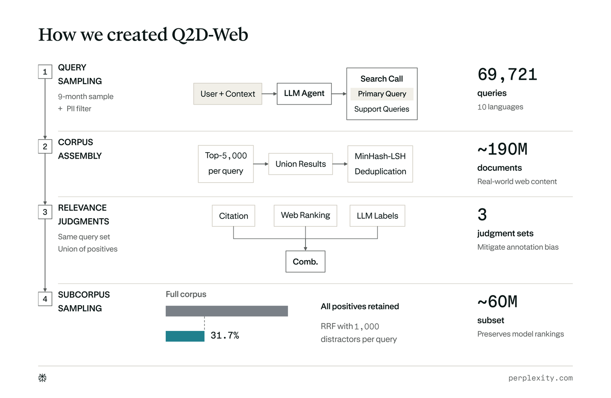
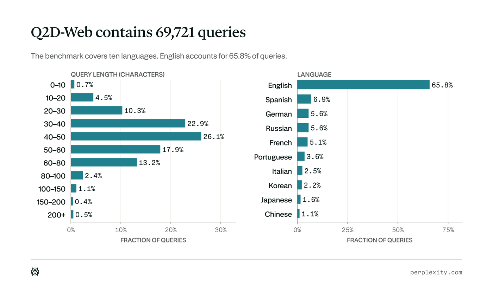
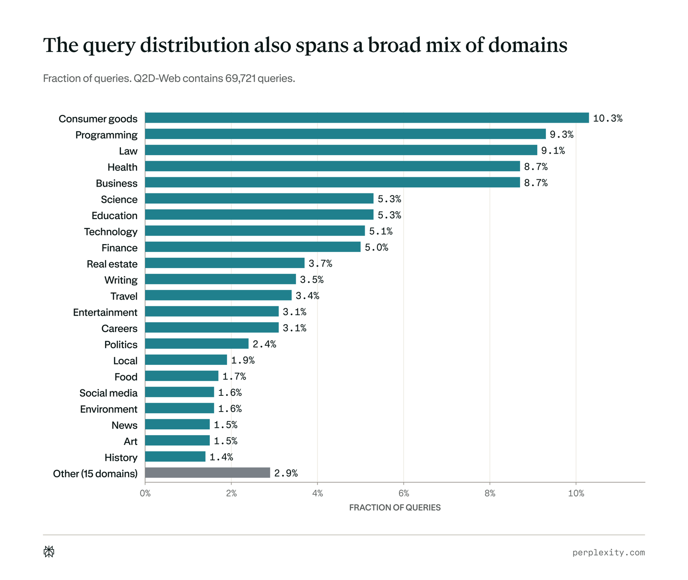
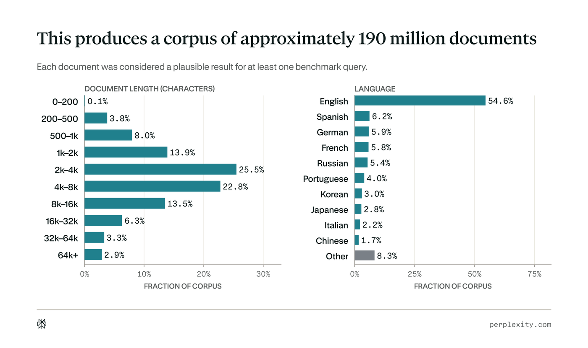
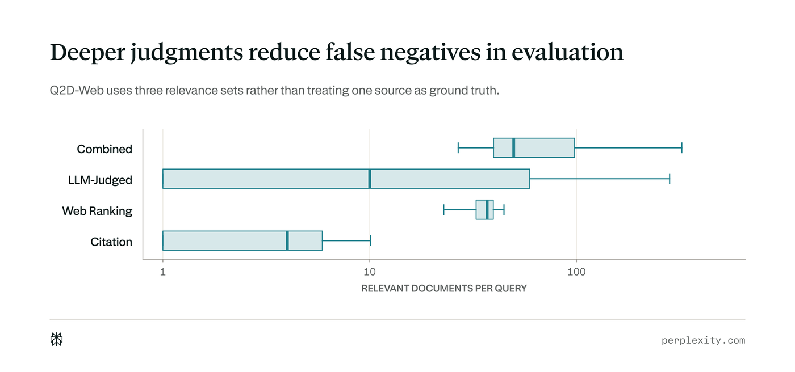
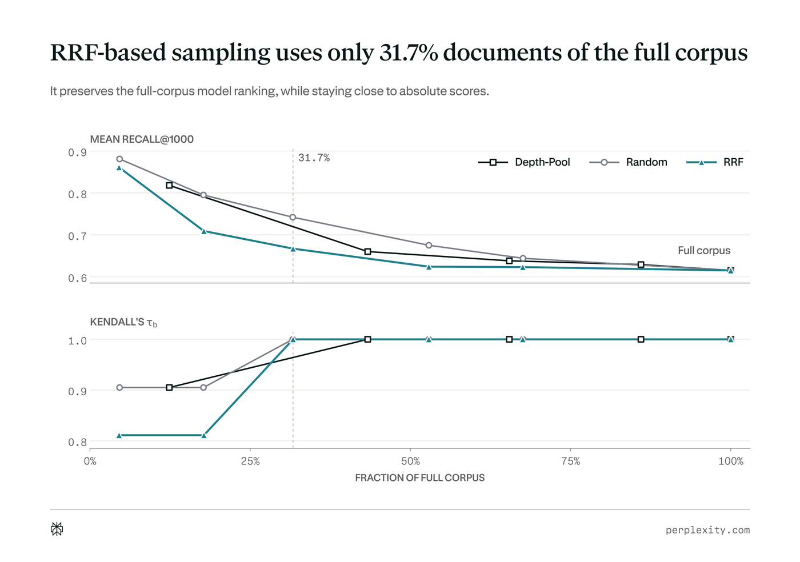
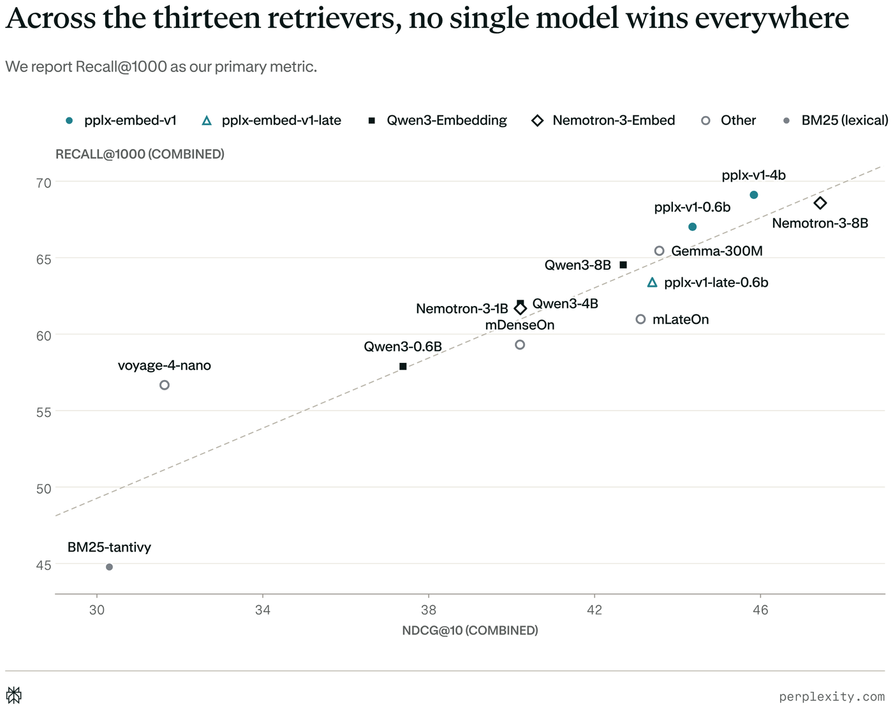

Perplexity发布了Q2D-Web：一个评估agentic RAG检索环节的基准与公开排行榜。它包含1.9亿份网页文档与69,721条由agent重新表述的查询，覆盖十种语言，取样自九个月的无PII生产搜索流量。
它的特别之处在于同时把三个维度做大：语料规模、已判定查询数、每查询的判定深度，并用三套相关性标签替代单一「标准答案」。对做检索与嵌入模型的人来说，这份基准及其排行榜提供了目前少见的网页规模横向对比。
Perplexity发布了Q2D-Web（Query2Doc-Web）：一个评估agentic RAG系统检索环节的私有基准与公开排行榜。它把此前提出的Q2D基准扩展到大规模语料、更大的查询集与更深的判定标注，专门用来在网页规模的大规模搜索上评估嵌入模型：包含1.9亿份网页文档，以及来自九个月无PII生产搜索流量的69,721条由agent重新表述的查询，覆盖十种语言。
在这个规模上，查询与文档级别的相关性信号注定是稀疏的。Q2D-Web没有把某一个来源当成标准答案，而是提供三套相关性判定集合，分别来自agent引用、生产环境网页排名，以及针对此前未判定配对的额外LLM判定；多来源限制了单一标注流程带来的偏差，更深的标注则减少了假阴性。排行榜对公开可获取的检索模型给出结果，统一使用一致的索引、检索与打分流程，评估可以提交。
要理解这个基准的必要性，先看真实检索评估难在哪。对每条查询，生产级检索系统要在数十亿网页的语料里搜索，返回数千份候选文档；这些候选决定了下游系统能看到哪些来源，直接塑造agent可用的证据。因此对这一环节的真实评估，需要在三个维度上同时扩展：语料中的文档数、已判定的查询数、以及每条查询的相关性判定数量。
更大的语料通过引入困难负例，让基准更有区分度：那些语义上与查询相似、但并未提供所需信息的文档，检索器必须把这种「看起来可能相关」与真正相关区分开。反过来，如果缩小语料但保留已知相关文档，就会把这些干扰项删掉、抬高召回率，作者做的子采样实验也显示了这一点。
更多已判定查询让性能估计更可靠：查询集太小，基准结果会严重依赖抽样到了哪些查询，既难以精确估计每个模型的性能，也难以有把握地区分模型之间的差距。更深的判定则减少评估中的假阴性：标签稀疏时，检索器可能检索到相关但未被判定的文档，从而被错误地算作不相关，让评估变得不可靠。信息检索领域主要的大规模开放数据集MS MARCO就是例子：那里人工检查过的「被检索到但未标注」的前排段落中，有70% 实际上是相关的。
现有基准往往只在一到两个维度上扩展：网页规模的集合通常已判定查询很少，而查询很多的基准一般语料小得多、标签也稀疏。更关键的是，大多数基准使用人写的查询，而agentic RAG系统用的是agent重新表述过的查询，两者在措辞、结构与具体程度上都可能不同。Q2D-Web三个维度同时扩展：1.9亿份文档、69,721条agent重写查询、合并判定集里平均每条查询99.6个正相关判定。最接近的公开对照是MS MARCO Web Search：1.009亿文档、9,374条测试查询，每条查询只有一个由点击推导出的正标签。
构建分成四个阶段：隐私过滤后的查询采样、语料组装与去重、相关性标注，以及子语料采样。

Q2D-Web建立在九个月里采集的23,000次无PII生产搜索之上，覆盖十种语言与数十个领域。这里的一次「搜索」，指agent为回应用户消息而执行的全部网页搜索工具调用；每次工具调用包含一条或多条查询。每条查询都是从用户请求、先前对话，以及（在适用时）同一次搜索中更早检索到的文档重新表述出来的。每次生产搜索包含一条主查询，用来重述用户的信息需求，以及零条或多条支持查询，用来探索不同措辞、背景信息或相关实体。它们虽然服务于同一个更大的请求，但可能需要不同的文档，因此Q2D-Web对每条查询独立评估、各有自己的相关性判定。

所有被纳入的查询都经过严格隐私过滤：查询必须来自允许其数据被使用的用户，并用pplx-pii-masking做PII检测，剔除包含个人信息的内容；同时移除完全重复、过短的查询，以及含有site: 之类检索操作符或带引号短语的查询。基准覆盖十种语言，英语占65.8%，其后是西班牙语、俄语、德语、法语、葡萄牙语、意大利语、韩语、日语与中文。查询分布也横跨广泛领域，包括消费品、编程、法律、健康、商业、科学、教育、技术、金融、旅行、娱乐、政治、本地信息与新闻。

对每条查询，先用生产检索系统取回前5,000份文档，再把所有结果集取并集；随后用MinHash-LSH对语料去重，把token 5-gram集合的Jaccard相似度至少0.975的文档聚成一类。
这个集合有意不是随机网页样本：每一份文档都曾被当成至少一条基准查询的合理结果，因此它构成一批密集的困难干扰项：那些在主题或语言上与查询匹配、却可能缺少所需日期、实体、版本、数量或某个侧面的页面。

在大规模下，相关性标签天然是不完整的：为所有可能的查询-文档对打标并不可行，而每一个判定来源都带有不同的偏差。Q2D-Web因此使用三套相关性集合，而不是把某一个来源当成标准答案，从而在不承受单一偏差的前提下提高标注深度。
引用标签：当agent在某次回答中引用了某份文档，就把该文档标为相关。这是最接近下游使用的信号：agent把它选作某个论断的证据；但引用在构造上就是高精度、低召回：一旦agent已有足够支撑，它就没有理由再去引用其他每一份相关页面。
网页排名标签：每条查询包含最多50份文档（平均43.1份），由内部检索栈在第一阶段用BM25与稠密检索识别，随后经交叉编码器重排。它捕捉的是有用但未被引用的文档。
合并加LLM判定：取引用与网页排名的并集，再为此前未判定的候选补充LLM判定，目标是减少假阴性的数量。具体做法是汇集BM25、ColBERTv2以及七个在2025年1月1日之前发布的稠密检索器的结果，用倒数排名融合（RRF）合并它们的排名，选出前500份未判定文档，再用DeepSeek-V4-Flash做严格的二分类相关性评判。
这三套集合让我们可以追问：模型表现是否依赖于「相关性」如何被定义。它们也减少了对单一标注栈的依赖，否则这套栈可能会偏向与生成标签所用系统相似的检索器。

全语料评估既昂贵又缓慢：在Q2D-Web上，用pplx-embed-v1-4b做一次评估需要4,608 H200 GPU小时，即便像EmbeddingGemma-300M这样的小模型也要近200 H200 GPU小时。为了让评估可行，作者构造了语料的一个子采样版本。
他们做了大量采样策略的消融实验，目标是让更小的子语料仍然反映全语料上的行为。所有策略都保留全部被判定为正的文档，只在「未判定的干扰项如何选择」上有所不同；真正要紧的干扰项，是那些检索器可能排在相关文档之前的文档，因为它们会改变模型的分数与排名位置。
他们比较了均匀随机采样、按构建阶段检索器固定深度池化，以及不同深度下按查询做RRF。基于RRF的采样只使用全语料中31.7% 的文档，却保持了全语料下的模型排名，同时与绝对分数保持接近：相比同规模下随机采样把平均Recall@1000抬高11.1个点，它只抬高4.5个点。这把评估成本降到全语料的三分之一左右：用基于RRF的子语料，pplx-embed-v1-4b约需1,500 H200 GPU小时，EmbeddingGemma-300M不到70小时。

每一次提交都先在采样子语料上评估。提交按总参数量分成两组：不超过1B与超过1B。在采样子语料上进入所在组前十的模型，会再在全语料上评估一次；排在组内前十之外的模型只发布在采样子语料排行榜上。
在所评估的模型上，Q2D-Web用三套不同的相关性集合给出一致的网页规模检索性能视图。排行榜把这些互补视角并排呈现，让用户可以观察模型在更窄的引用标签与更宽的相关性判定下分别表现如何。作者把Recall@1000作为主指标，因为第一阶段检索器只需要把相关文档放进候选池，最终次序由后续重排决定。

下表给出十三个检索器在引用、网页排名与合并三套相关性集合上的Recall@1000与nDCG@10，数值越高越好。
没有任何模型在三套判定上都领先。在Recall@1000上，pplx-embed-v1-4b在网页排名（65.73）与合并（69.11）上最高，Nemotron-3-Embed-8B在引用（61.68）上最高；而在合并Recall@100与nDCG@10上，次序又会变化：Nemotron-3-Embed-8B（30.03与47.44）高于pplx-embed-v1-4b（29.82与45.84）。
在同一个族内，更大的模型在合并Recall@1000上得分更高：Qwen3-Embedding从57.89（0.6B）升到64.53（8B），Nemotron-3-Embed从61.68（1B）升到68.58（8B），pplx-embed-v1从67.02（0.6B）升到69.11（4B）。
还有一条需要留意的说明：Perplexity的模型与其他提交模型使用完全相同的评估流程，但由于Q2D-Web来自Perplexity的生产流量，这些模型可能获得一种分布内的优势；即便基准的评估查询与语料已被排除在模型训练之外，解读结果时仍应把这一潜在优势考虑在内。
| 模型 | R@1000引用 | R@1000网页排名 | R@1000合并 | nDCG@10引用 | nDCG@10网页排名 | nDCG@10合并 |
|---|---|---|---|---|---|---|
| BM25-tantivy | 43.92 | 42.50 | 44.77 | 5.74 | 11.45 | 30.30 |
| EmbeddingGemma-300M | 58.17 | 58.93 | 65.45 | 9.20 | 17.30 | 43.56 |
| mDenseOn | 51.78 | 52.56 | 59.31 | 7.63 | 15.06 | 40.20 |
| Nemotron-3-Embed-1B | 54.40 | 54.37 | 61.68 | 7.54 | 14.83 | 40.21 |
| Nemotron-3-Embed-8B | 61.68 | 61.73 | 68.58 | 10.16 | 18.69 | 47.44 |
| pplx-embed-v1-0.6b | 58.35 | 62.15 | 67.02 | 9.37 | 19.76 | 44.36 |
| pplx-embed-v1-4b | 61.22 | 65.73 | 69.11 | 10.33 | 21.29 | 45.84 |
| Qwen3-Embedding-0.6B | 50.10 | 51.82 | 57.89 | 6.58 | 14.11 | 37.38 |
| Qwen3-Embedding-4B | 54.95 | 55.60 | 62.01 | 7.67 | 14.97 | 40.21 |
| Qwen3-Embedding-8B | 57.38 | 58.34 | 64.53 | 8.30 | 16.27 | 42.69 |
| voyage-4-nano | 49.38 | 50.14 | 56.67 | 5.41 | 11.77 | 31.63 |
| mLateOn | 52.85 | 53.12 | 60.98 | 8.44 | 15.51 | 43.11 |
| pplx-embed-v1-late-0.6b | 56.56 | 58.14 | 63.40 | 9.13 | 17.25 | 43.39 |
要申请评估，需要提交一个公开可获取的Hugging Face模型，并通过评估请求表单发起。模型特定的推理设置遵循所提交仓库里的model card，包括推荐的查询与文档指令或前缀、池化方式、归一化以及相似度函数。所有查询与文档都会用模型自己的分词器截断到512个token，包含指令、前缀与特殊token，因此更长的上下文支持并不带来优势；请确保model card提供完整、无歧义的复现说明。
有资格的模型必须能通过标准的transformers或sentence-transformers接口加载。无法在trust_remote_code=False下运行的模型，需要先人工审查其自定义代码与提交者，耗时明显更长；私有或受限（gated）仓库不在评估范围内。更完整的方法与发现，见其技术报告。
参考：https://www.perplexity.ai/hub/blog/q2d-web